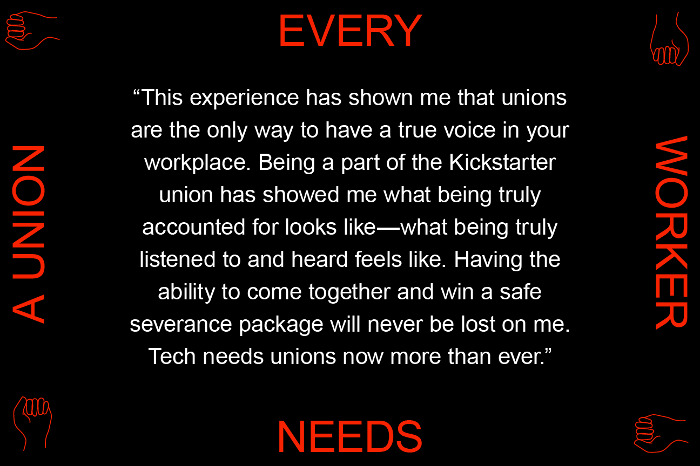
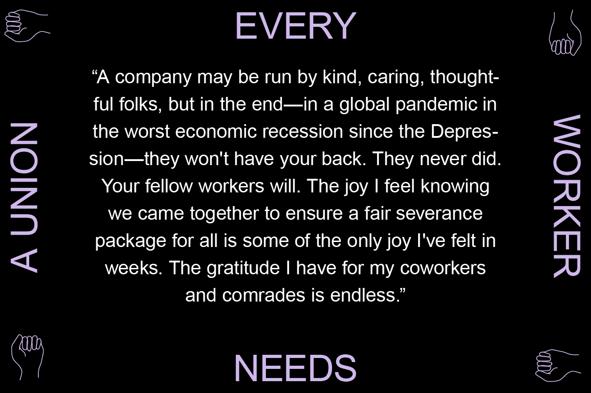
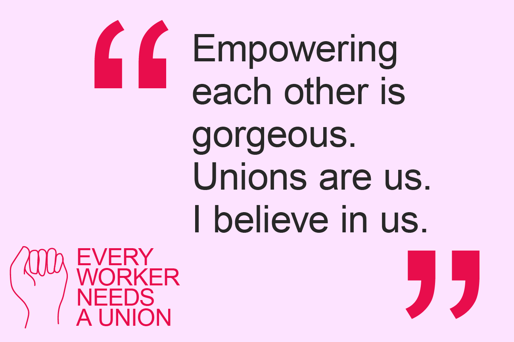
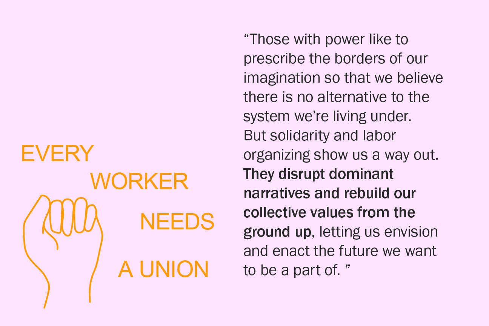
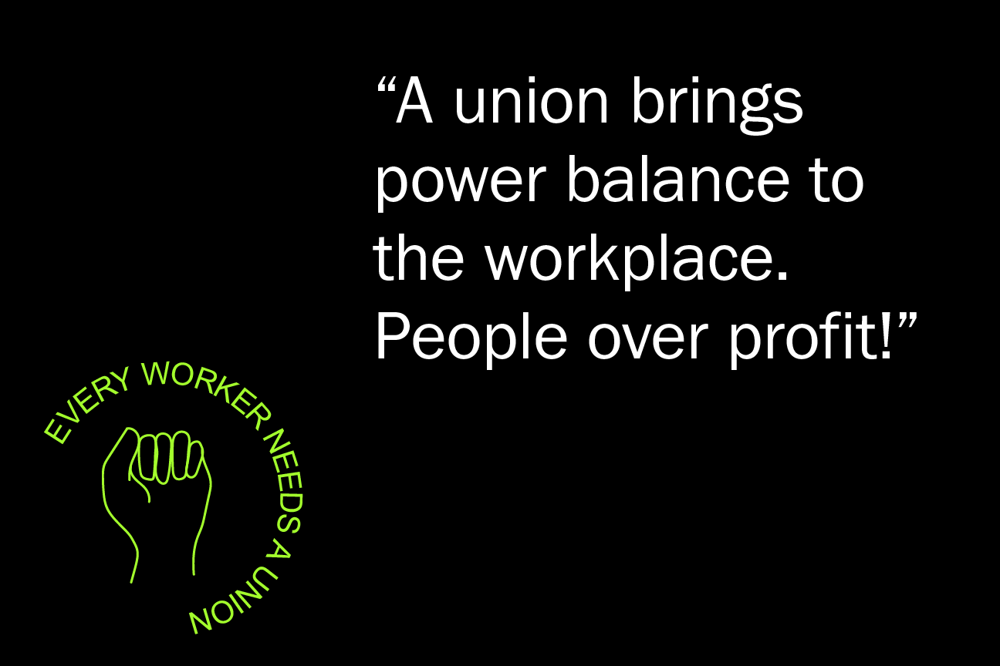
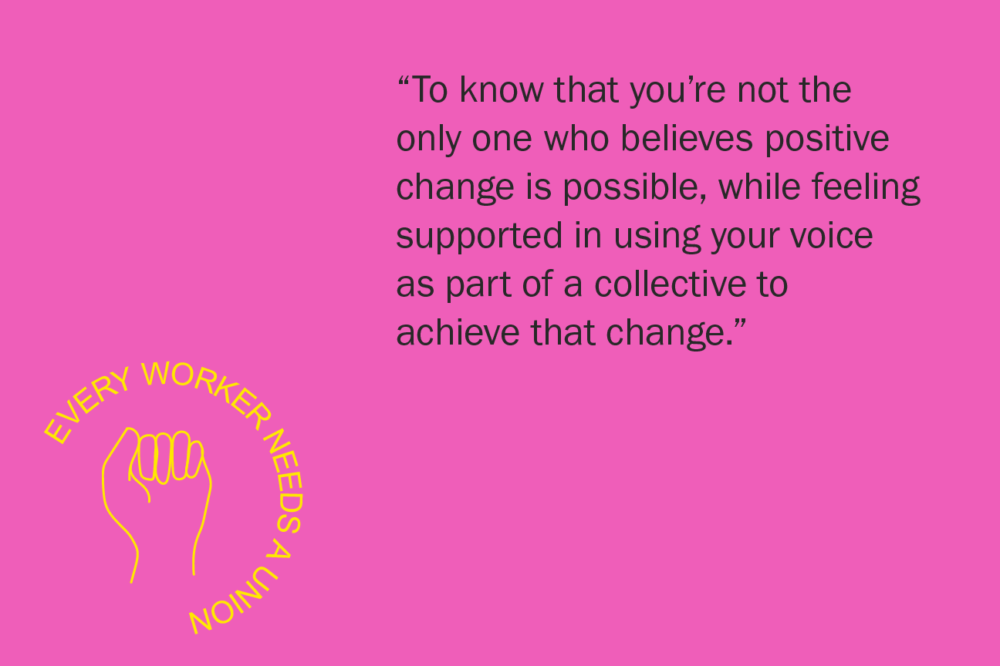
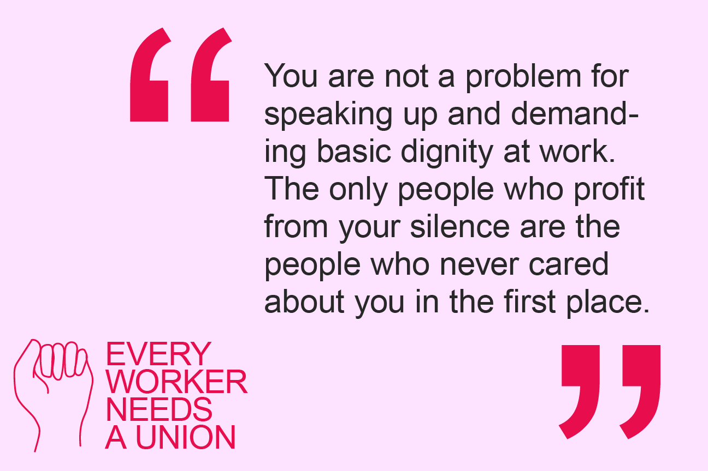

Today will be the last day at Kickstarter for many of our colleagues impacted by COVID-19 layoffs.
— Kickstarter United (@ksr_united) May 15, 2020
For the next week, we'll be sharing our thoughts, feelings, and stories about building the first union in the tech industry.
Let's say it together: every worker needs a union! 🗣️










![Working with Kickstarter United was eye-opening. If you think your white-collar tech company's leadership has your back, and you don't need a union, I'd like to tell you that you're wrong. Even the best-intentioned companies will gut their ranks to survive. Unions are the only way to ensure a company will put its people over its capitalistic agenda. They're also a lesson in collaborative leadership, mutual aid, and resiliency. Starting a union is a way to fast-track your education around how resilient, mutually beneficial organizations can exists in this world. It's worth the effort.](../images/every_worker_needs_a_union/FINAL_Every Worker_07.png)


